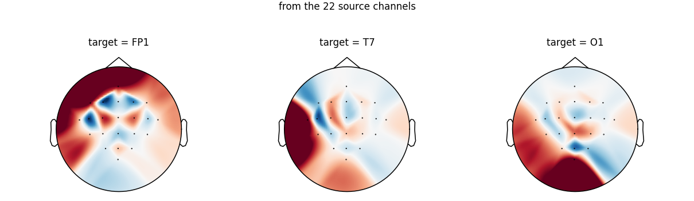

Note
Go to the end to download the full example code.
Loading Pretrained Foundation Models on Arbitrary Channel Sets#
Most pretrained EEG foundation models were trained on a specific, canonical channel montage:
Labramwas pretrained on a fixed 128-channel set;BIOTon an 18-channel TCP montage;SignalJEPAon 62 channels.
When you want to fine-tune one of these checkpoints on a dataset
whose channel layout is different — fewer channels, different
naming, different reference — you cannot just call
from_pretrained: the backbone refuses to accept an input that
does not match the pretrained shape.
The Interpolated* family of model wrappers solves this. Each
wrapper inserts a spatial-interpolation layer in front of the
backbone, so the pretrained weights see exactly the canonical
input they were trained on. The interpolation matrix is built
from the user’s channel positions using MNE’s spline-based
interpolation.
This tutorial covers:
loading a pretrained foundation model on a non-canonical channel set with a single
from_pretrainedcall,what the interpolation matrix actually does, visualised with scalp topomaps,
the same recipe for the other shipped variants (
InterpolatedBIOT,InterpolatedSignalJEPA),the
trainable=Trueflag for data-driven projections.
Warning
The Interpolated* API is experimental and may change
without a deprecation cycle.
# Authors: Pierre Guetschel <pierre.guetschel@gmail.com>
#
# License: BSD (3-clause)
import warnings
import matplotlib.pyplot as plt
import mne
import numpy as np
import torch
from braindecode.datasets import MOABBDataset
from braindecode.models import (
InterpolatedBIOT,
InterpolatedLaBraM,
InterpolatedSignalJEPA,
Labram,
)
warnings.simplefilter("ignore")
mne.set_log_level("ERROR")
torch.manual_seed(0)
np.random.seed(0)
Setting the scene: a real EEG dataset#
We load a single subject of the BNCI2014_001 motor-imagery dataset to obtain a realistic 22-channel EEG montage (a subset of the 10-20 system). We will only use the channel layout, not the recordings themselves, so a single subject is enough.
dataset = MOABBDataset(dataset_name="BNCI2014_001", subject_ids=[3])
montage = mne.channels.make_standard_montage("standard_1020")
for ds in dataset.datasets:
ds.raw.pick_types(eeg=True)
ds.raw.set_montage(montage)
raw_info = dataset.datasets[0].raw.info # MNE Info, kept around for plotting
chs_info = raw_info["chs"]
user_ch_names = [ch["ch_name"] for ch in chs_info]
print(f"Dataset has {len(chs_info)} channels:")
print(user_ch_names)
Dataset has 22 channels:
['Fz', 'FC3', 'FC1', 'FCz', 'FC2', 'FC4', 'C5', 'C3', 'C1', 'Cz', 'C2', 'C4', 'C6', 'CP3', 'CP1', 'CPz', 'CP2', 'CP4', 'P1', 'Pz', 'P2', 'POz']
The wall: the pretrained model refuses our channels#
The Labram checkpoint on the Hugging Face Hub
(braindecode/labram-pretrained) was trained on a specific
128-channel layout. The vanilla Labram
class enforces that layout strictly: passing any other chs_info
raises an error at construction time.
Labram refused our chs_info:
Labram requires chs_info to match LABRAM_CHANNEL_ORDER exactly (128 channels, specific order). Got 22 channels. For arbitrary channel sets, use InterpolatedLaBraM (from braindecode.models import InterpolatedLaBraM).
Without the wrapper, you would have to surgically rebuild the first spatial layer of the model and decide yourself how to map your channels onto the canonical set — error-prone and difficult to keep aligned with the pretrained weights.
The fix: a one-line from_pretrained#
InterpolatedLaBraM is a subclass of
Labram that prepends a frozen
spatial-interpolation layer. From the user’s side it accepts any
chs_info; from the backbone’s side the input is always the
canonical 128-channel tensor the pretrained weights expect.
This means the standard from_pretrained workflow just works:
pass your own chs_info (and the same n_times the
checkpoint was trained on, here 3000 samples), use
strict=False because the interpolation matrix is not in the
checkpoint, and you are done.
Loaded checkpoint, model has 22 channels
chs_info matches the user's: Fz, ...
A forward pass goes through the interpolation layer first and
the pretrained backbone second, returning logits of the user’s
requested n_outputs:
Input : (2, 22, 3000)
Output : (2, 4)
Note
Why strict=False? In the default (frozen) mode the
interpolation matrix is a non-persistent buffer: it is
derived from your chs_info at construction time and is
deliberately absent from state_dict. Loading without
strict=False is also fine in practice — there are no
extra keys to complain about — but strict=False is the
safe default when mixing user-provided geometry with
third-party checkpoints.
Under the hood: MNE-backed spline interpolation#
The interpolation layer is a thin
ChannelInterpolationLayer whose
forward pass is a single matrix multiplication:
where W has shape (n_target_chans, n_source_chans).
W is built once at construction time using
mne.io.Raw.interpolate_to() (spline interpolation): for
every target sensor position, MNE fits a smooth spherical-spline
field through the source signals and reads its value at the
target. This produces a fixed linear combination per target
channel that depends only on the geometry, not on the data.
We can read W directly from the model:
W = model.interpolation_layer.matrix.detach().cpu().numpy()
target_chs_info = InterpolatedLaBraM._TARGET_CHS_INFO
target_names = [ch["ch_name"] for ch in target_chs_info]
print(f"W shape: {W.shape} (target × source)")
W shape: (128, 22) (target × source)
Visualising the spatial filters#
Each row of W is a spatial filter: it tells how the
22 source channels are linearly combined to estimate one target
channel that the source montage does not have. The natural way
to look at a spatial filter is a scalp topomap on the source
channel positions: red areas mean source channels with positive
weight, blue areas mean negative weight.
We pick three canonical target channels that are not in our source montage (so they are genuinely interpolated, not just passed through), spread across frontal, temporal, and occipital regions:
src_names_lower = {name.lower() for name in user_ch_names}
target_names_lower = [name.lower() for name in target_names]
chosen_targets = ["FP1", "T7", "O1"]
chosen_idx = [target_names_lower.index(name.lower()) for name in chosen_targets]
assert all(name.lower() not in src_names_lower for name in chosen_targets), (
"chosen targets must be interpolated, not name-matched"
)
fig, axes = plt.subplots(1, len(chosen_targets), figsize=(11, 3.2), dpi=110)
for ax, name, idx in zip(axes, chosen_targets, chosen_idx):
weights = W[idx]
vmax = float(np.abs(weights).max())
mne.viz.plot_topomap(
weights,
raw_info,
axes=ax,
show=False,
cmap="RdBu_r",
vlim=(-vmax, vmax),
contours=0,
sensors=True,
)
ax.set_title(f"target = {name}", fontsize=11)
fig.suptitle(
"Spatial filter (one row of W) used to estimate each target channel\n"
"from the 22 source channels",
fontsize=11,
y=1.05,
)
fig.tight_layout()
plt.show()

Notice how each filter is localised under the target sensor: to estimate the signal at Fp1 the layer relies mostly on the frontal source channels, T7 leans on the left central row, and O1 mixes the parieto-occipital source channels. This is the spline interpolation doing exactly what one would expect from a scalp field smoothed across sensor positions.
Because W depends only on positions, channels that share a
name between source and target (here Fz, Cz, Pz,
POz) get a one-hot row and pass through unchanged — so the
pretrained weights see those source channels exactly where they
expect them.
Other shipped variants#
The same recipe applies to the other foundation models that ship a fixed pretrained montage. Construction-only examples (without loading the actual checkpoints):
model_biot = InterpolatedBIOT(
chs_info=chs_info,
n_outputs=4,
n_times=2000,
sfreq=200,
)
out_biot = model_biot(torch.randn(2, len(chs_info), 2000))
print(f"InterpolatedBIOT output: {tuple(out_biot.shape)}")
model_sjepa = InterpolatedSignalJEPA(
chs_info=chs_info,
n_outputs=4,
n_times=512,
sfreq=128,
)
out_sjepa = model_sjepa(torch.randn(2, len(chs_info), 512))
print(f"InterpolatedSignalJEPA features: {tuple(out_sjepa.shape)}")
InterpolatedBIOT output: (2, 4)
InterpolatedSignalJEPA features: (2, 186, 64)
To load the corresponding pretrained weights, swap the
constructor for from_pretrained, e.g.:
model_biot = InterpolatedBIOT.from_pretrained(
"braindecode/biot-pretrained-shhs-prest-18chs",
chs_info=chs_info,
strict=False,
)
See Loading and Adapting Pretrained Foundation Models for the available checkpoints.
Making the interpolation trainable#
By default the interpolation matrix is a frozen, non-persistent
buffer — recomputed from chs_info at every __init__ and
never updated by the optimizer. This is the safe choice for
linear probing: the pretrained weights see exactly the input
they were trained for.
For larger fine-tuning budgets you can let the network learn a
better spatial projection by passing trainable=True. The
matrix is then an torch.nn.Parameter, initialised from
the same MNE spline interpolation, optimised jointly with the
backbone, and saved to state_dict.
model_trainable = InterpolatedLaBraM(
chs_info=chs_info,
n_times=3000,
n_outputs=4,
patch_size=200,
trainable=True,
)
print("Trainable interpolation parameters:")
for name, p in model_trainable.named_parameters():
if "interpolation_layer" in name:
print(f" {name} shape={tuple(p.shape)} requires_grad={p.requires_grad}")
Trainable interpolation parameters:
interpolation_layer.matrix shape=(128, 22) requires_grad=True
Summary#
Interpolated*wrappers let you callfrom_pretrainedon a foundation-model checkpoint with any channel layout, in one line.The projection is built once from MNE’s spline interpolation and stored as a frozen non-persistent buffer — safe for linear probing.
For larger fine-tuning budgets,
trainable=Trueturns it into annn.Parameterinitialised from the same MNE solution.The shipped variants are
InterpolatedLaBraM,InterpolatedBIOT, andInterpolatedSignalJEPA; for custom backbones, use theInterpolatedModel()factory.
Total running time of the script: (0 minutes 9.873 seconds)
Estimated memory usage: 1435 MB
Run this example